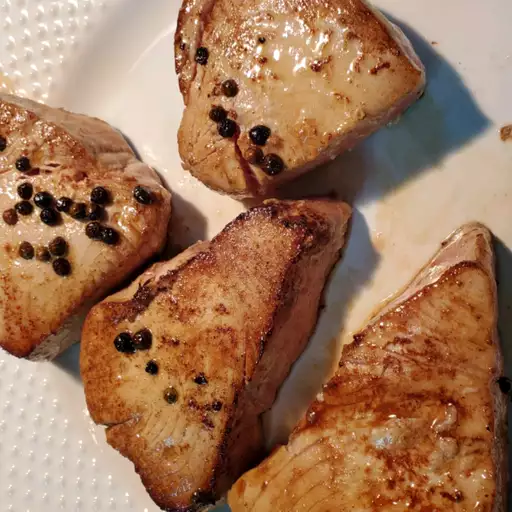
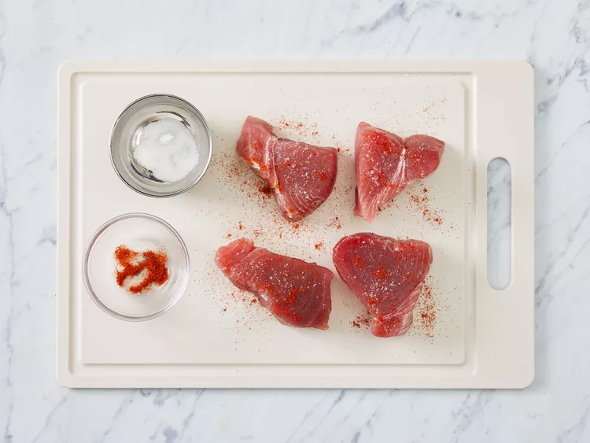
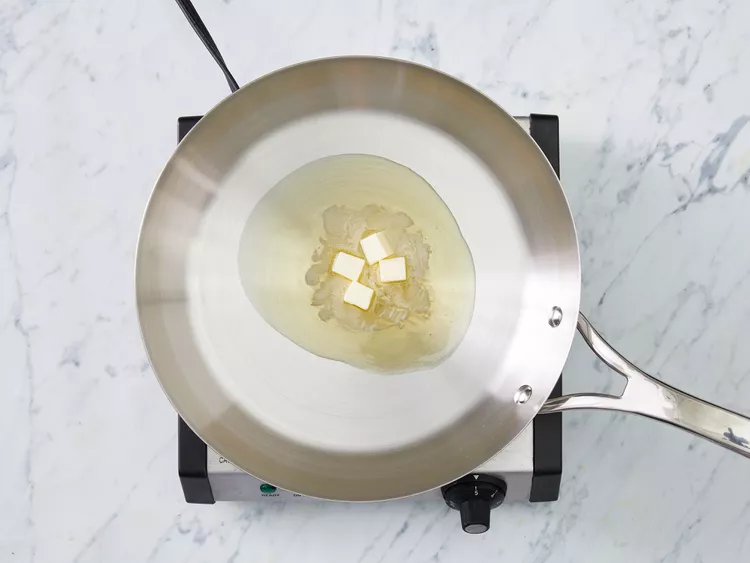
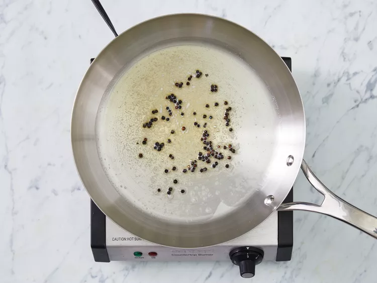
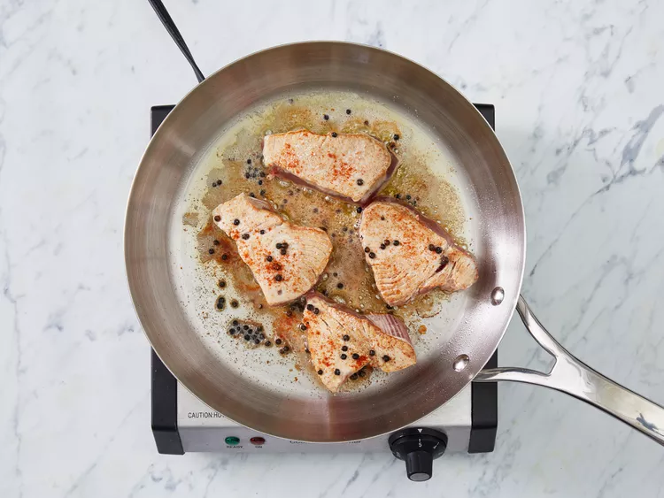
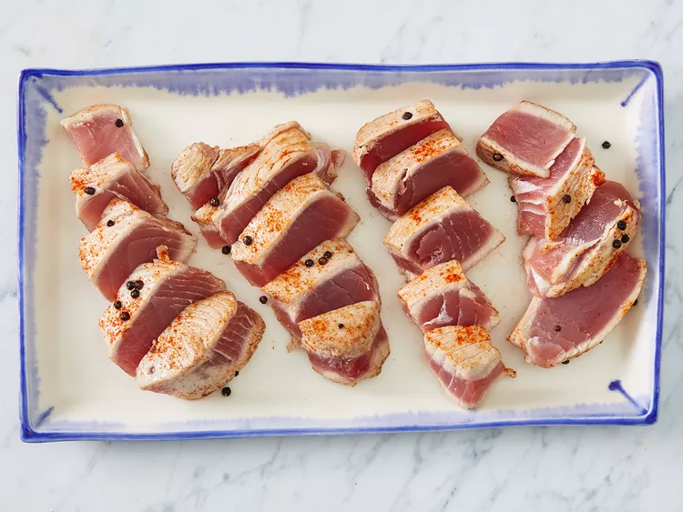
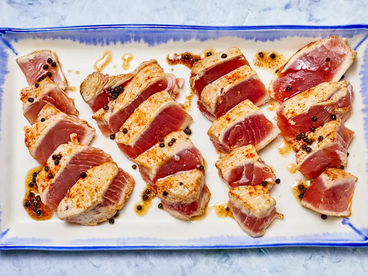

Tuna Steaks

There's no need to head to a fancy seafood restaurant to get your ahi tuna steak fix. Instead, try this top-rated ahi tuna steak recipe that comes together in just seven minutes — no, seriously, all you need is seven minutes.
There are two types of ahi tuna you can buy: bigeye tuna and yellowfin tuna. Bigeye tends to have a buttery taste, while yellowfin has a milder flavor. Both types of ahi tuna can be used for this recipe.
You should always buy sashimi-grade or sushi-grade tuna if you plan to eat it raw. This means the fish market has deemed it safe to eat raw.
Ingridients
- 2 (5 ounce) ahi tuna steaks
- 1 teaspoon kosher salt
- ¼ teaspoon cayenne pepper (Optional)
- ½ tablespoon butter
- 2 tablespoons olive oil
- 1 teaspoon whole peppercorns
Step-By-Step Directions on how to make Tuna Steaks
- Pat tuna steaks dry and season on both sides with salt and cayenne pepper.

- Melt butter in a skillet over medium-high heat.

- Add olive oil and pepper corns; cook until peppercorns soften and pop, about 5 minutes.

- Gently place seasoned tuna in the skillet and cook to desired doneness, anywhere from 30 seconds to 1 1/2 minutes per side.

- Slice tuna into 1/4-inch thick slices to serve.

- Enjoy!
